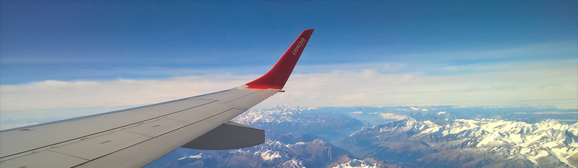

Стало известно, в какие украинские города отечественные авиакомпании полетят этим летом.
Некоторые анонсировали расширение полетных программ внутренних рейсов, тогда как некоторые
маршруты по Украине, наоборот, будут закрыты. В компаниях поясняют — особого
спроса на них нет, тем более, что платить за билеты гражданам нередко приходится дороже,
чем на заграничных направлениях.
Для туристов и курортников
С 6 июня "Мотор Сич" добавляет три рейса: из аэропорта "Киев" (Жуляны) в Одессу и Львов,
а из Львова в Ужгород. Линию будут обслуживать региональный 52-местный самолет Ан-140-100 и Ан-24.
Одесские рейсы по будням запланированы дважды в день, и по одному на выходные. Вылет из
Одессы в 07.40 и 17.50, из Киева 09.50 и в 19.50. В субботу вылет из Киева в 10.50 в воскресенье
в 20.40. Рейсы из Одессы в субботу будут вылетать в 08.50, а
в воскресенье в 18.30. Время в пути 1 час 20 минут, цена в одну сторону от 1,2 тыс. грн.
Для сравнения: по железной дороге это расстояние можно преодолеть за 2,5 часа, а билет класса люкс обойдется в 228 грн.
"Рейс Ивано-Франковск–Львов — технический. Авиакомпания "Днеправиа" перегоняет самолет
под рейс в Брешию (Италия) из Ивано-Франковска. С коммерческой точки зрения авиаперевозки Львов–Ивано-Франковск нецелесообразны, поскольку наземное сообщение быстрое
и в несколько раз дешевле минимального билета на самолет", — поясняет Хижняк. На последнем заседании Комиссии Госавислужбы "Днеправиа" было отказано в этом направлении, однако, как видно из табло львовского аэропорта, рейсы осуществляются.
И главный сюрприз сезона — рейс МАУ Киев–Черновцы. Как рассказала UBR.ua корпоративный пресс-секретарь МАУ Евгения Сацкая, он должен стартовать с 1 июля, цена билета пока не определена, но будет сравнима с рейсом из столицы в Ивано-Франковск.
"Он будет ежедневным. Поскольку состояние полосы позволяет принимать только небольшие самолеты, для этого рейса мы берем у "Днеправиа" в мокрый лининг (то есть самолет с экипажем) региональный самолет Embraer 145", — рассказала Сацкая.
Гендиректор аэропорта Черновцы Борис Морской сообщил UBR.ua, что сейчас решается вопрос оборудования аэропорта.
"Горсовет выделил 5,3 млн. грн на закупку необходимой техники, еще 800 тыс. грн. на проект реконструкции. Одновременно мы продолжаем переговоры с авиакомпаниями об открытии международных рейсов", — сказал он.
Рейс Киев-Черновцы эксперты оценивают, как закономерное расширение сети полетов авиакомпании МАУ. "На линии будет как трансферный пассажиропоток, который в хабовом аэропорту Борисполь пересядет на другие рейсы МАУ, так и "прямой". На этой линии авиация
имеет значительное преимущество перед наземными видами транспорта. Поезд, например, идет более 15 часов", — прокомментировал Сергей Хижняк.
Почему дома = дороже?
Прошлым летом внутренние рейсы эксплуатировали еще YanAir (Киев-Одесса) и Атласджет Украина (рейс Киев-Львов был осуществлен один раз), однако в этом сезоне о таких направлениях речь не идет. МАУ не будет запускать этим летом рейсы из Харькова и
Львова в Одессу, поскольку, как сообщила Евгения Сацкая, ожидаемого спроса в прошлом году компания не увидела.
31 мая 2016
На главную